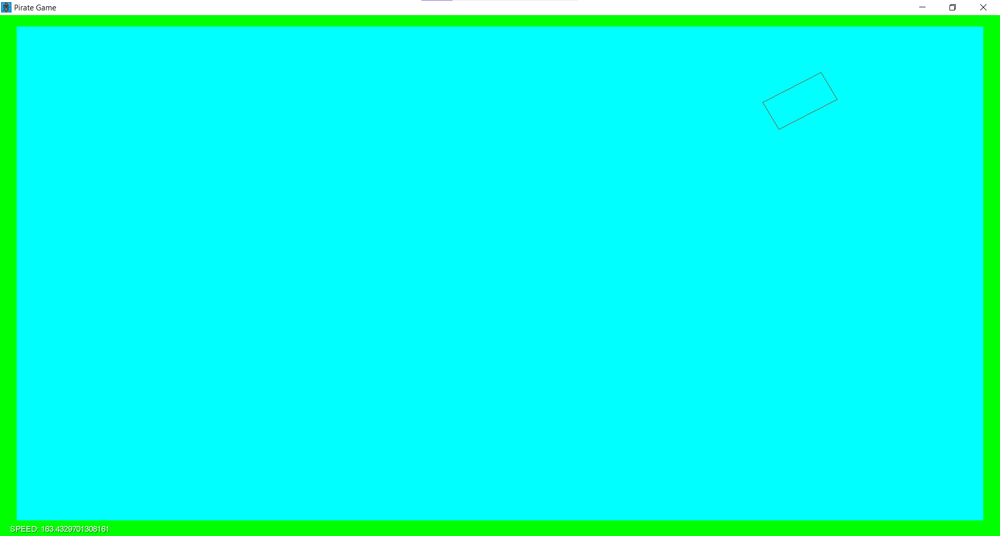
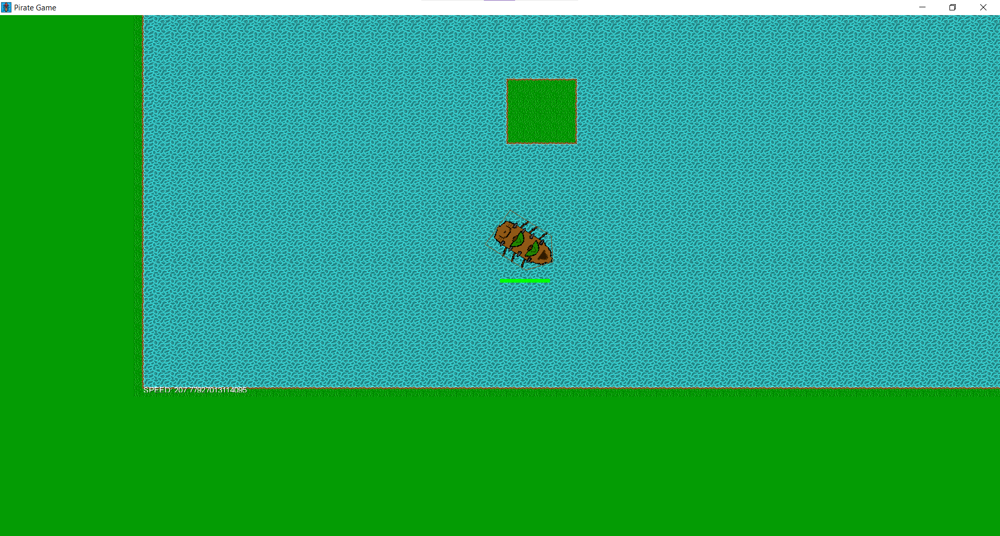
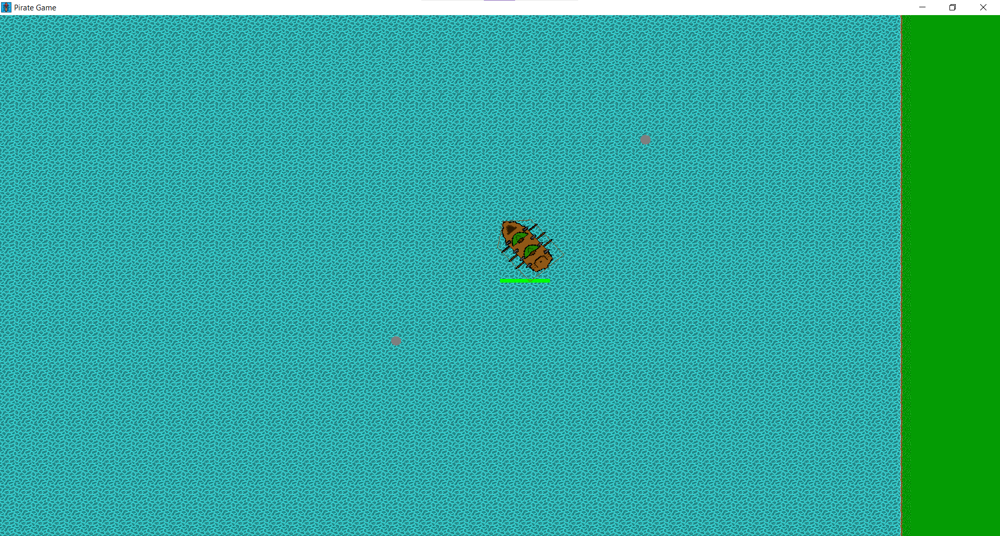
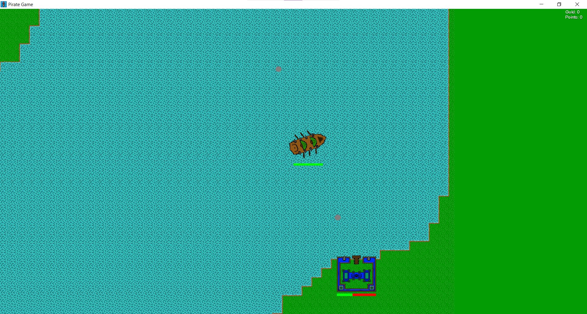
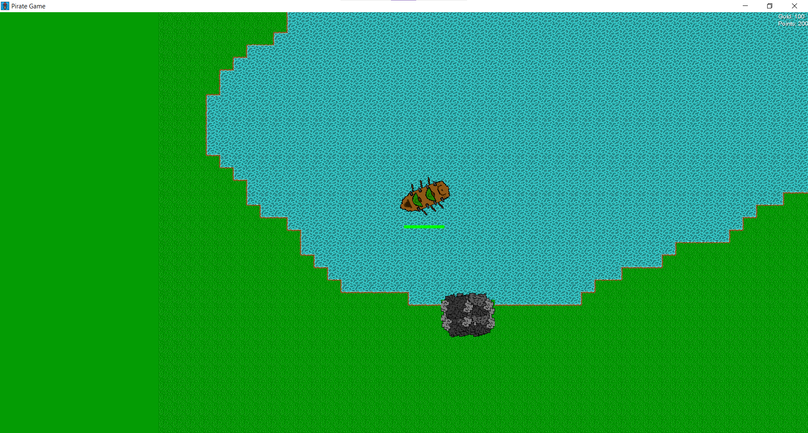
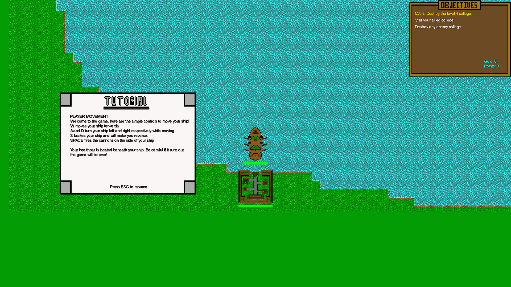
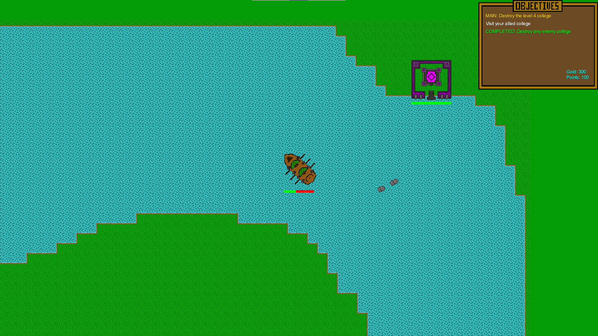
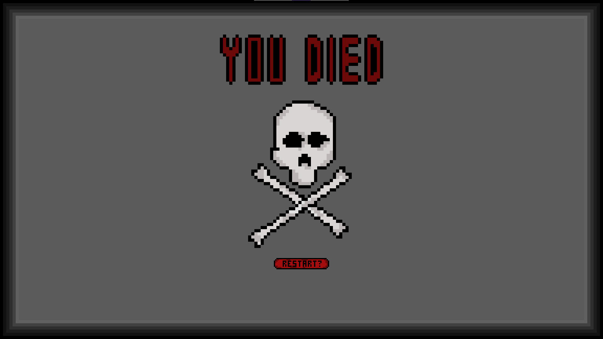
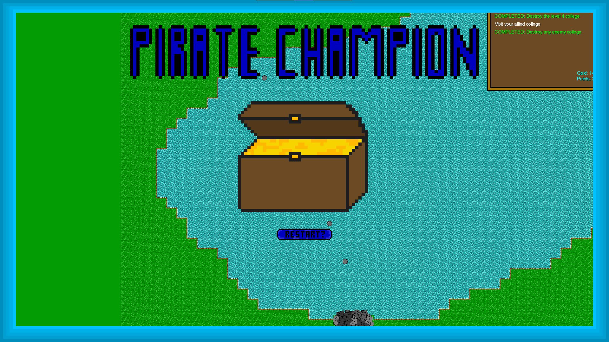

Welcome to the 11 Buccaneers website! Below you'll find an index of all the milestone builds for our York Pirate Game project. Clicking on one will bring you down to the correct part of the webpage, and each snapshot has a download link for a .zip file containing an executable .jar of the game build and a folder with its source code.
All versions are available from our GitHub page as well!
The first snapshot is about as basic as it gets. The goal was simply to have a ship which you can control and move with WASD and little area to move around in. Nothing is pretty; all the tiles are just flat colours and the ship is a rectangle that isn't even filled in, but when starting out it's always function over form. At this stage the land tiles (the green squares) don't have any collision so you can very quickly sail out of bounds of the viewport.
There's a little bit of text in the bottom-left of the screen to track the ship's speed for debugging purposes, i.e. checking if the acceleration is behaving correctly, the ship's speed is properly capping out at its maximum etc. etc.
This version features proper sprites for the player and their environment, as well as collision checking with land tiles and a larger map with a scrolling camera that follows the player. It also adds a health bar under the player sprite, though there is no way for its value to change through gameplay.
You obviously can't see it with a static image, but the boat sprite is animated while it's moving. The boat can also fire cannon balls by pressing the spacebar. At this point they travel for a full 10 seconds before expiring, though naturally they won't last this long in later versions.
The map has been adjusted to be a bit more interesting and natural-looking, and colleges have been added to the land. They have their own health bars and take 9 cannon shots to deplete, and once their health reaches 0 their sprite is replaced with a rubble sprite. Colleges are uniquely identifiable from one another by both their colour and the shape of their base. The player gains points and gold (shown in the top right corner, though currently the text is too small to be easily parsable during gameplay) when they destroy a college.
 Tutorial messages have been added. When the game starts the player is shown one which tells them how to move and about their health bar, which they can close with the escape key. They're shown additional prompts when they enter the range of both an enemy and an allied college to tell them what they are. The game also now starts in borderless fullscreen.
   